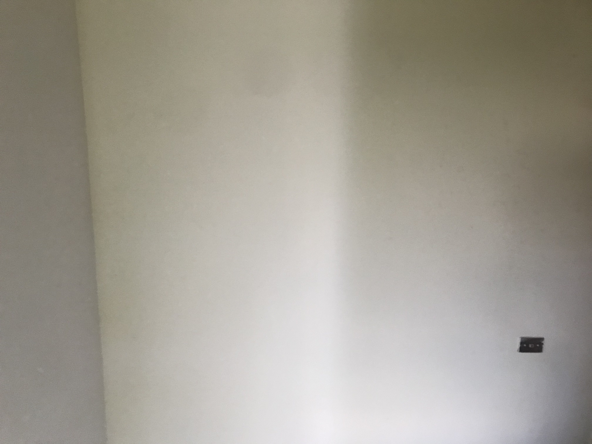

Colors look different depending on the other colors surrounding them. This is a very important part of using colors in art‚ because it plays a big part in making the illusion of lighting in a flat piece. Color context can trick our brain into thinking that a color looks more saturated‚ dark‚ bright‚ etc. by just the colors around it. A color could look completely different in one piece than another. If you look at a picture of a dimly lit object‚ it will still seem like the same color as a picture of a brightly lit object would‚ because the colors surrounding the object would also be darker‚ or less saturated in the dimly lit photo. But when you would actually compare the 2 colors‚ one would be a lot darker. In the images below‚ it is the same grey square on two different color backgrounds‚ making one stand out more. This is an example of how a color stands out more when it is next to a color that is a lot different than itself‚ than if it was next to a similar color of similar saturation‚ hue‚ etc.

Another example of color context is the picture below. It is just a picture of a plain white wall. Well‚ it looks white‚ but it’s not. Once you compare it to actual white‚ you can see that it is actually a lot darker. But if I were to ask someone what color the wall was‚ they would most likely say white. This also shows how an object in real life isnt just one pure color‚ and is made up of tons of different colors that make it look the way it is.
return to top of the page